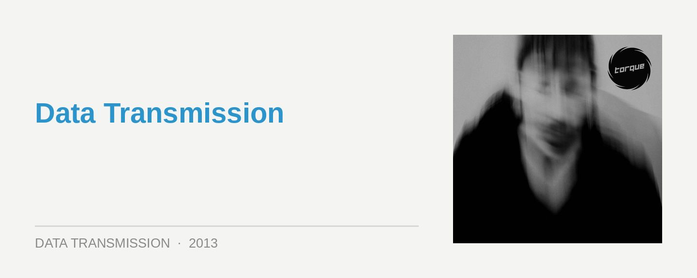

Q’hey – Core
Label: TorqueScore: 8/10
As a figure who’s stood amongst Tokyo’s techno scene since the early 90s, with a presence in the studio that’s ebbed and flowed over the past 15 years, Q’hey steps up here with his first solo LP Core on local independent stable Torque. And his Japanese touch is a very distinct one; contrasting with the steely, polished finish of a lot of German techno, or the titanium warehouse grooves heard from Sweden, the atmosphere here is a little more wild, unchained and definitely very ballsy. A ‘scorched earth’ approach to hard techno, if you will.
The best thing about Core is that it’s mapped out like a proper industrial techno journey, and a very visual one at that. He tempers the energy in places, before ushering the stomp back in with what is a very full-bodied ‘maximal’ techno sound. There’s bucketloads of white noise thrown in to add detail and unease, to an atmosphere that’s otherwise focused on the fist pumping.
The opening Accord is a rising swirl of ambient noise that allows the menace to slowly build, before the techno kick slams properly in Apache with a cybernetic pulse. There’s an apocalyptic sense of foreboding in the unsettling drone of North Wind, which builds to a shattering, shaking peak. He plays the same trick again in Jack, with a slowed pulse building into a blast of sound, before Q’hey tempers it off – only to eventually rise into a rush of flames again.
The melodic elements are used sparsely across Core, though often to great effect. He finally lets them break though properly in the mayhem in Buddyroid, the melodic shimmers building to a proper hands-in-the-air techno anthem. He takes it deep and percussive with Enter, while the elements shriek, howl and shout at each other in the roaring finale that is Wasted Land.
The flow of energy through Core reflects the fact that this is a very well paced and programmed journey indeed. Q’hey has managed a conceptual consistency on his album, though you can also easily imagine him smashing this material out in main room of a club like Tokyo’s grandiose Ageha. Lovers of a suitably dark and apocalyptic approach to techno should apply.